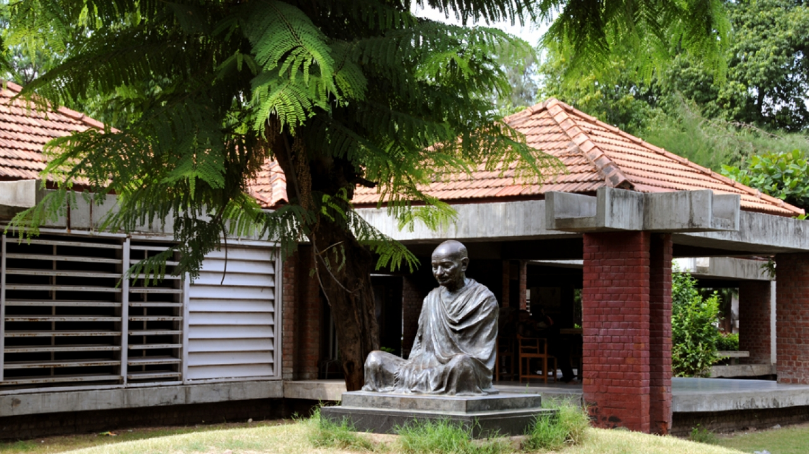
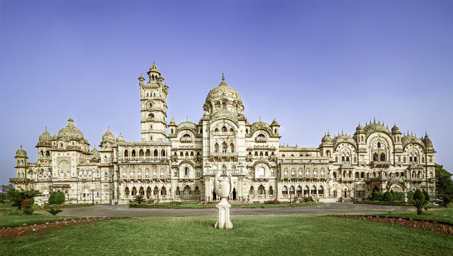
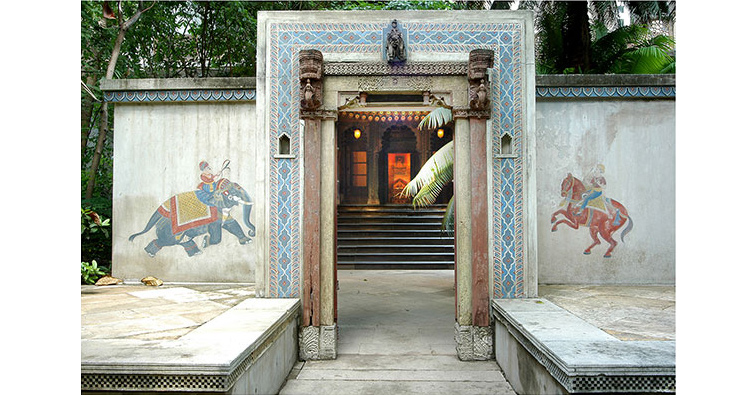
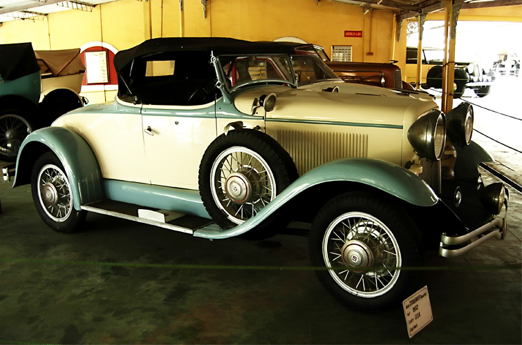
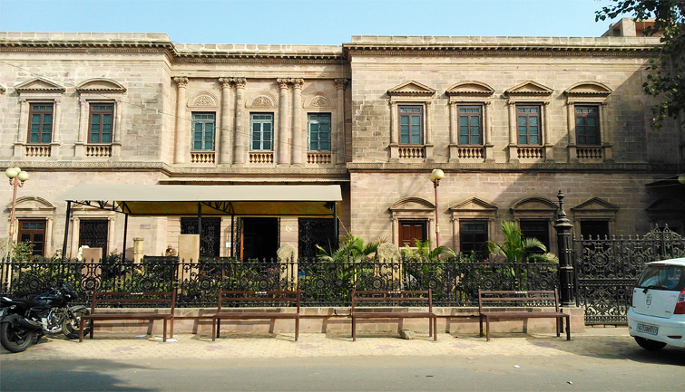

- Gandhi Smarak Sangrahalaya, Ahmedabad:

This very place treasures the personal belongings of Mahatma Gandhi, Father of the Nation, and gives an idea about his life with the help of his life-size paintings, books, manuscripts, etc. The prime attraction of this museum remains the spinning wheel and writing desk, where Ganadhiji used to spend most of his time. Located in the capital city Ahemdabad, the Gandhi Smarak Sangrahalaya displays the unforgetable moments from Mahatma Gandhi’s life through pictorial representation. Gandhiji was a great spiritual and political leader, who had a main role in making India an Independent nation.
- Maharaja Fateh Singh Museum, Vadodara:

Maharaja Fateh Singh Museum is counted among the most popular historical museums in Gujarat, which houses a treasure-trove of royal belongings that dates back to the 19th and 20th century. This impressive museum is located in the Vadodara city, inside the beautiful Lakshmi Vilas Palace, which once belonged to the Gaekwad family of Gujarat. This stunning building is a reflection of Indo-saracenic style of architecture that has still kept the personal belongings of the Gaekwad family. Some of its best collections include European paintings, Indian & Western miniature paintings, Greco-Roman artifacts, Chinese and Japanese artifacts, life portraits of the royal family itself, and many more.
- Calico Museum of Textiles, Ahmedabad:

This amazing museum houses a beautiful collection of the hand-woven fabrics from across India. It was founded by Gautam Sarabhai and his sister Gira Sarabhai in 1949 to display a fine collection of fabrics used by the Mughal and clothes worn by different rulers of 15th to 19th centuries. The people interested in fabrics, especially the fashion designing enthusiasts, love visiting this bonafide treasure trove to explore the lavish textile heritage of India. Calico museum is one of the most popular and widely visited attractions in Ahemdabad. Some of its finest collection includes holographs on palm leaves, kalpasutra fabric, fine fabrics such as silk weaving, patolas, patalu shawls, scarves, sadi, etc., Mughal attires like helmets, chain mall, & shields, persian carpets used by the great Mughal emperor like Akbar, embroidery collection like Adhai Dvipi Pata, Jnana Baji Pata, Sarada Purnima, Govardhana, Dharana, Gopastami, Ramanavami, etc.
- World Vintage Car Museum, Ahmedabad:

The World Vinatge Car Museum is one of the most unique collection of vintage cars, antique vehicles, utility vehicle, motorcycles, and buggies, built by the family of Shri Pranlal Bhogilal from Ahemdabad. It represents a very rare and exclusive collection of marques cars from all over the world, of different types and ages. It has a collection of ceremonial limousines, the romantic convertibles, the magical sports cars, and more. It has in its collection more than hundred finest cars from brands like rolls-Rocyes, Bentleys, Daimlers, Langondas, Mercedeces, Maybach, Packards, Cadillacs, Auburns, Cord, Lancias, Lincolns, etc. and many such makers from US, UK, and Europe.
- Kutch Museum, Kutch:

Your Gujarat tour is incomplete, if you have not been to the Kutch Museum in Bhuj. This picturesque art gallery was established in 1877 by Maharao Sir Khengarji III to display a rich collection of Kshatrapa inscription, dating to the 1st century AD. Originally called Fergusson Museum, the Kutch Museum is the oldest museum in Gujarat with an interesting collection of coins (including Kutch’s local currency ‘Kori’), paintings, arms, musical instruments, sculptures, and metalwork. The museum reflects a rich past of tribals in Gujarat, who are a major part of Kutch’s history. There are different galleries in this museum including a picture gallery, an anthropological section, an archeological section, textiles, weapons, musical instruments, a shipping section, and a stuffed animal section.